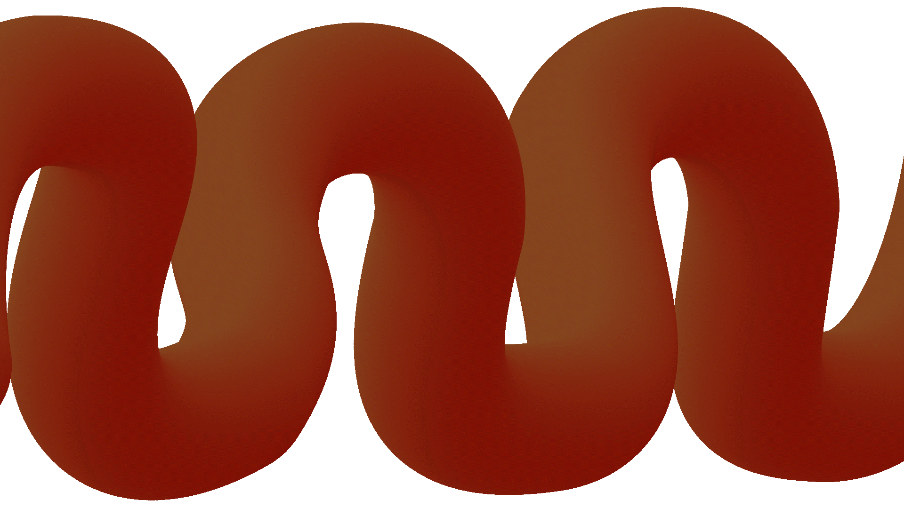
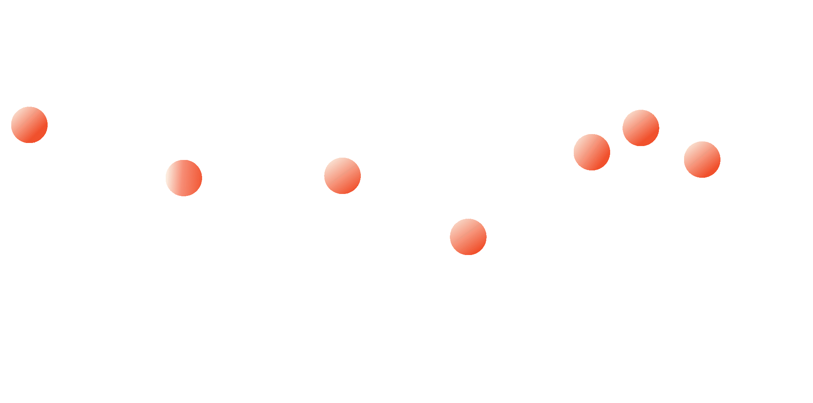
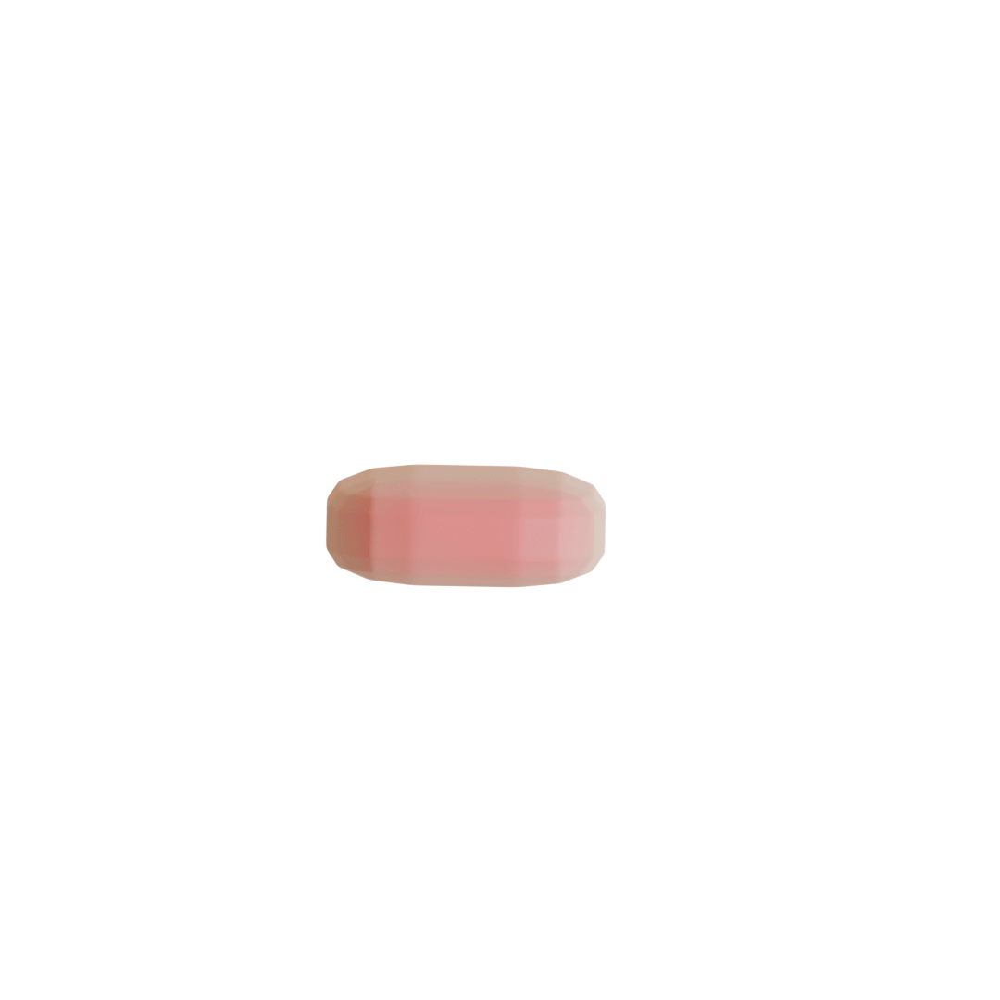
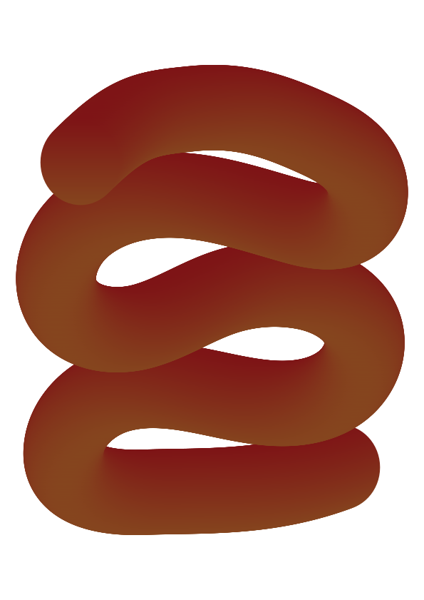
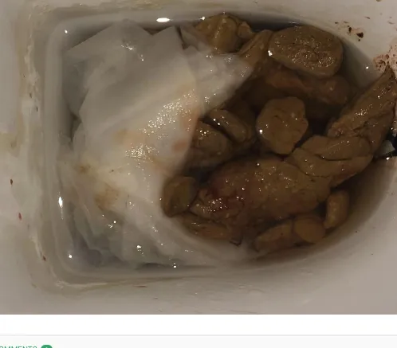

it's always wyd and never...





“Stool is the most information-rich material you have ever laid eyes on”
It is among the most complete biological indicators of your general well-being.
Your gut flora, digestive efficiency, metabolic health, and immune system activity are all reflected in this complex blend of biological data.
Still disgusting? 100%.
Luckily, medical professionals figured out a way to talk about it without anyone dying of embarrassment
It's a visual dictionary for poop. Seven types, sorted by shape and texture, from hard little pebbles to pure liquid.
It was created so you don't have to describe it. You just point at a number.
(you don’t have to... I bet you will)




(seriously, just keep scrolling! we’ve got a cooler one :D)